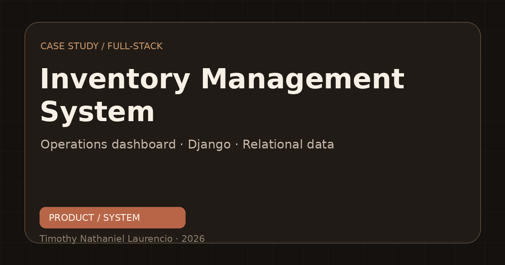
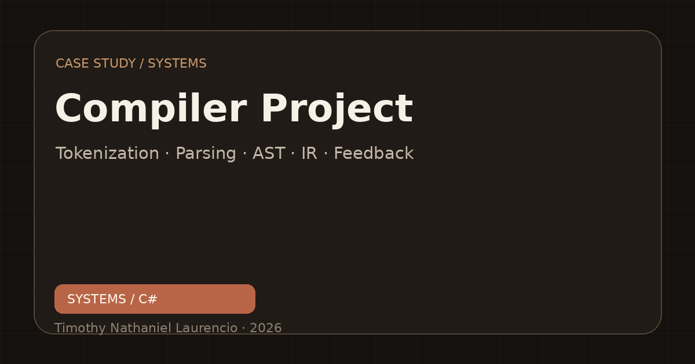

EquipmentHub
A browser-based equipment operations system for inventory, custody, events, maintenance, weekly checks, reporting, and portable backup.
HighlightsEquipment movements · maintenance tracking · reports

ABOUT · BACKGROUND · SELECTED PROJECTS
I studied Computer Science and Technology at Nanjing Tech University and am based in Nanjing, China. I learn by turning questions into practical software, then improving it through feedback.
My projects span web products, learning systems, inventory tools, and a C# compiler. I care about clear engineering, useful details, and interfaces people can understand without a long manual.
Teaching, student community work, and studying abroad have shaped how I communicate and collaborate. They remind me to make technical work useful to the people who rely on it.

AREAS I AM EXPLORING
SELECTED WORK
A selection of systems I have designed and built, with case studies that show how they work.
A browser-based equipment operations system for inventory, custody, events, maintenance, weekly checks, reporting, and portable backup.
HighlightsEquipment movements · maintenance tracking · reports

An HSK-focused learning product with personalized study, spaced repetition, Hanzi writing, games, stories, and progress insights.
HighlightsSpaced repetition · HSK 1–6 · progress insights
An offline-capable multilingual app for exploring emotions, keeping notes, and reviewing personal patterns.
HighlightsOffline access · notes and history · three languages
A C# compiler core with tokenization, parsing, syntax analysis, intermediate representation, and live feedback.
HighlightsTokenization · parsing · live feedback

An academic project exploring how 5G resource scheduling can balance allocation quality with energy use.
FocusResource allocation · energy efficiency
Earlier project case studies
A MAP OF THE WORK
Explore seven connected projects. Select a node for details; use arrow keys to move between nodes. On desktop, drag the canvas to pan, scroll to zoom, or drag nodes to rearrange them.
Select a project for details · Arrow keys move between nodes · Desktop: drag to pan, scroll to zoom
KEEP IN TOUCH